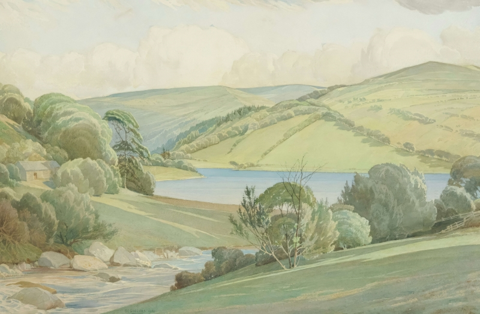
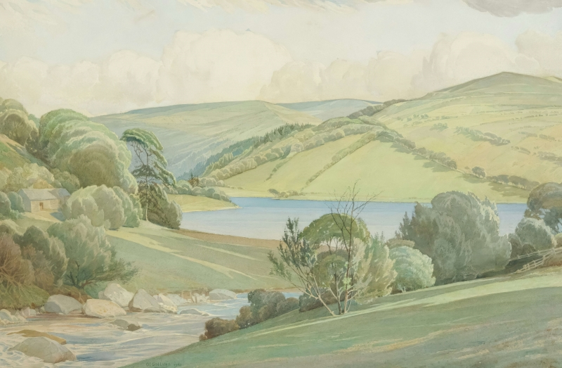

Any artists wanting to involve themselves within this website will need to make an account.
To be a featured artist, you must match the Nature theme of the website.
To return to the homepage click here
To learn more about visit our About Us page.
To vote for new artists and photgraphers Click Here
To learn more about what the website offers or how it works visit the FAQ page.
To contact us about any suggestions or quesitons we did not answer in our FAQ visit the Contact Us page.
"An intellectual says a simple thing in a hard way. An artist says a hard thing in a simple way." - Charles Bukowski
The NAPL is the place to share art and photographs related to nature.